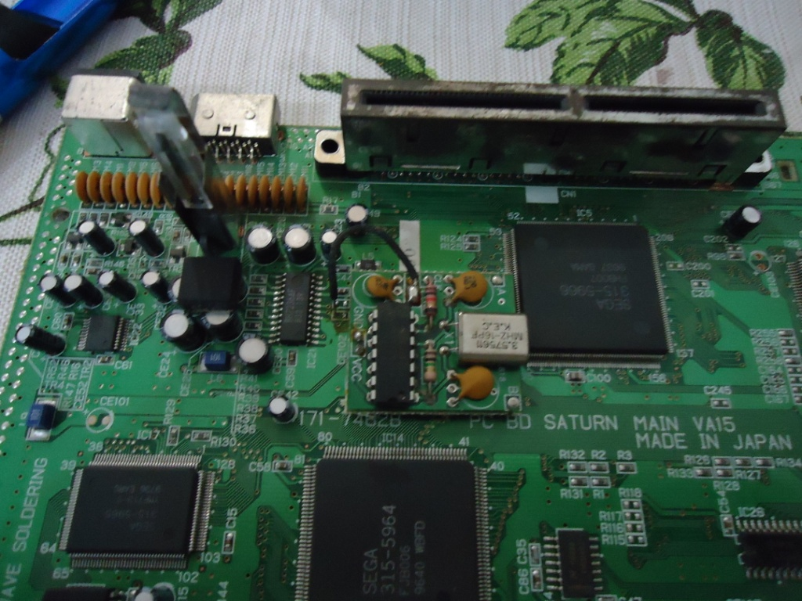
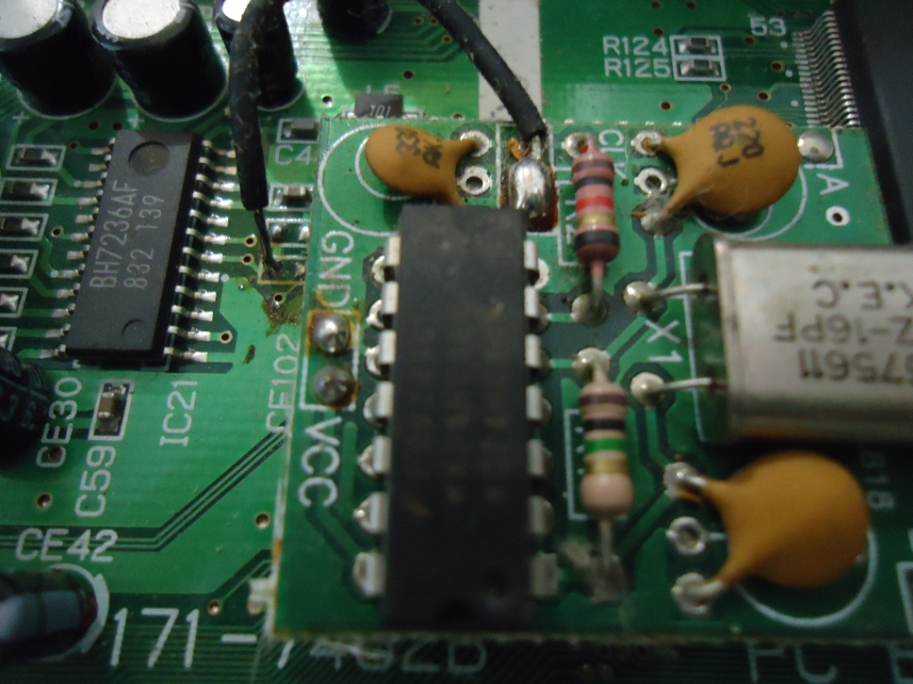
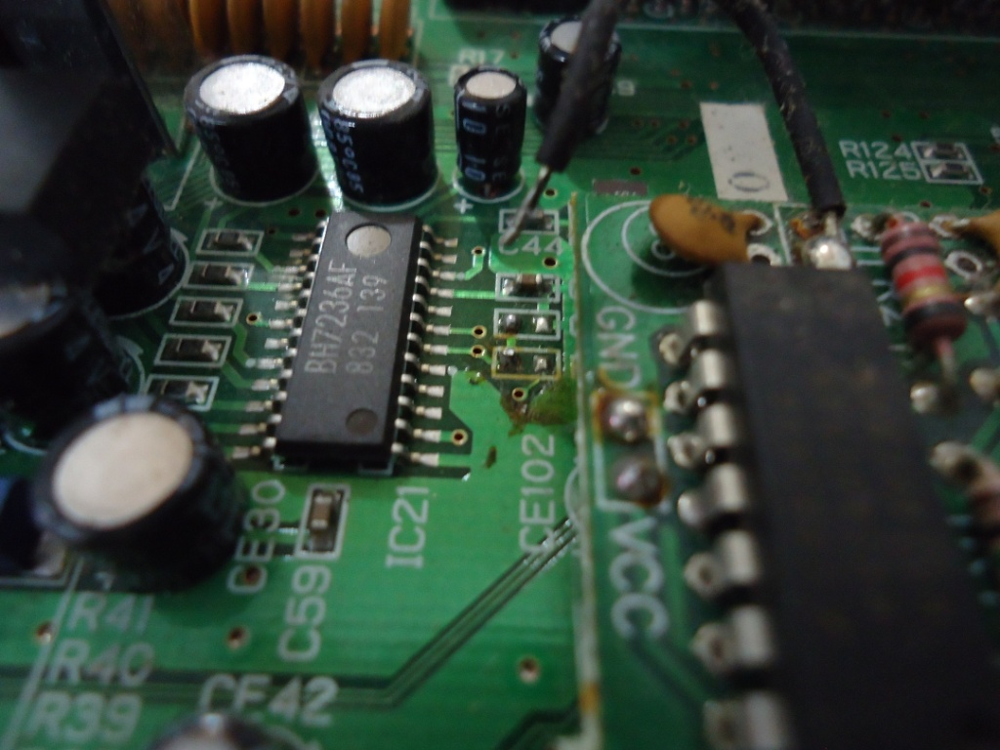
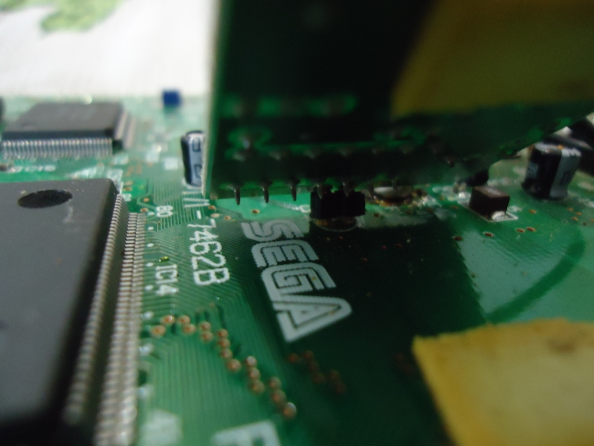
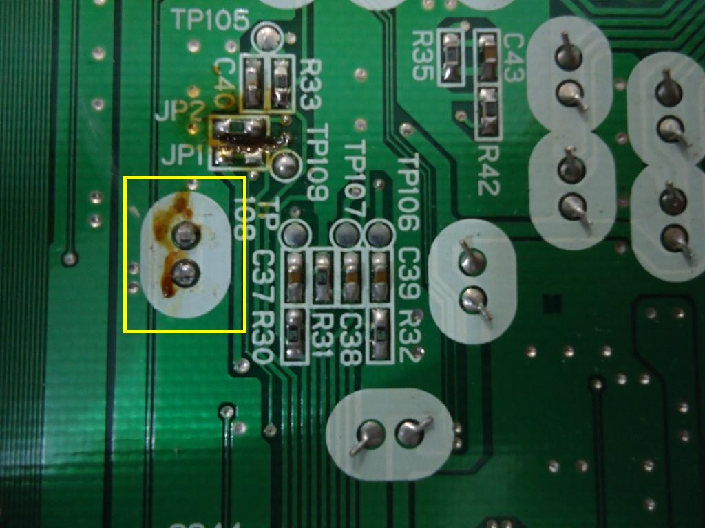
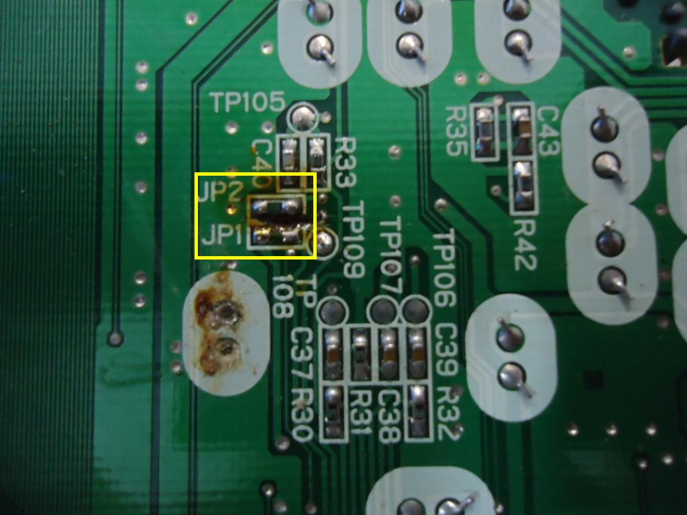
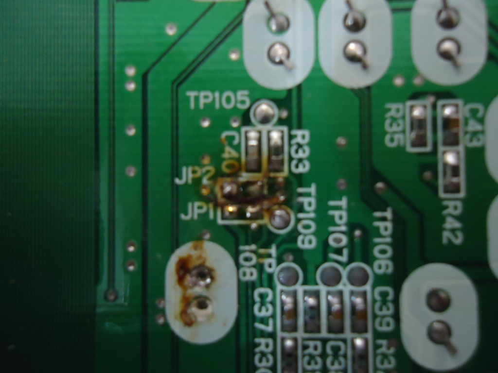
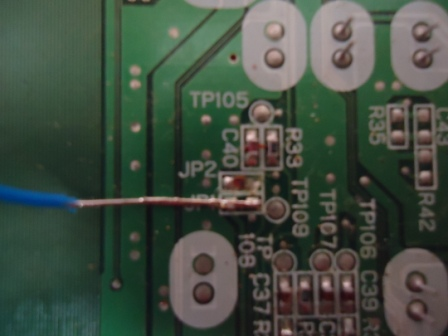
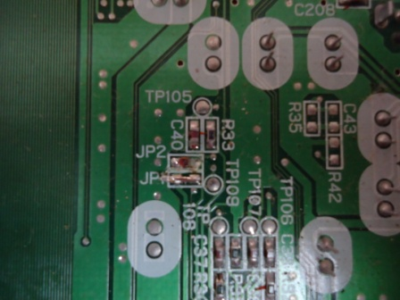

Retranscoficando o Saturn Branco
 :::. Por Gigacom - Quando o Saturn foi enterrado lá no exterior, a Tec Toy aproveitou para importar vários lotes de consoles não vendidos para comercializá-los por aqui. Numa dessas é que apareceram os famosos Saturns Brancos e Skeleton por aqui, que na verdade são Saturns japoneses porém modificados para operar no nosso sistema de TV, o PAL-M, só que a imagem não ficou das melhores...
:::. Por Gigacom - Quando o Saturn foi enterrado lá no exterior, a Tec Toy aproveitou para importar vários lotes de consoles não vendidos para comercializá-los por aqui. Numa dessas é que apareceram os famosos Saturns Brancos e Skeleton por aqui, que na verdade são Saturns japoneses porém modificados para operar no nosso sistema de TV, o PAL-M, só que a imagem não ficou das melhores...
_______________________________________________________________________
A Tec Toy importou dois tipos de Saturns brancos: um com os botões power/reset e a tampa do slot de cartuchos pretos, e outro com esses mesmos itens nas cores rosa, e tambem importou os Skeleton, aqueles Saturns verde-translucidos. Independente disso, por dentro o video game é o mesmo. A placa mãe é a VA15, a ultima variação das placas mãe do Saturn. Para fazer com que a imagem desses consoles fossem exibidas em PAL-M, a Tec Toy instalou uma placa decodificadora na placa mãe.
De vez em quando essa plaquinha acaba provocando problemas na imagem do Saturn, daí é preciso removê-la. E tambem, é fato mais que conhecido que o sistema PAL-M faz com que a imagem fique meio avermelhada e sem brilho. Portanto, removendo essa placa se resolve os problemas de imagens que o Saturn pode apresentar, e de quebra a melhora consideravelmente. Teoricamente, bastaria remover essa placa codificadora para que o video game voltasse a ser NTSC-J, mas não é só isso. Portanto, para transcodificar o Saturn para NTSC (que é padrão que mais nos interessa) é preciso fazer o seguinte, acompanhe:
1º Passo - Remova a placa codificadora que a Tec Toy instalou. Ela é presa na placa mãe do Saturn em dois pontos, por cima através de um fio preto e por baixo em dois pontos de solda. Dessolde o fio preto em cima da placa mãe, e dessolde os pontos de solda abaixo da placa mãe que sustentam a decodificadora:

Visão da parte superior da placa mãe, onde está instalada a placa decodificadora da TT.

Close da placa decodificadora. Notar o fio preto que a liga na placa mãe.

Dessolde o fio preto e...

De uma espiada abaixo da decodificadora. Tá vendo aquela peça? Ela precisa ser dessoldada por baixo para sair.

Em destaque, este são os pontos de solda que sustentam a decodificadora. Dessolde e retire essa placa.
2º Passo: Depois que se remove a decodificadora, se você ligar o console verá que a imagem ficará em preto e branco com interferência. Isso acontece pois alguns jumpers na placa mãe que orientam o chip decodificador nativo do Saturn estão configurados de modo a dar suporte ao PAL-M. É preciso por tanto alterar a posição desses jumpers para fazer com que o Saturn exiba imagens em NTSC. Para isso, abaixo da placa mãe, perto de onde estava aquela solda que prendia a placa que a TT instalou, você verá dois jumpers de nome JP1 e JP2. Remova o resistor que está no JP2 e ligue o JP1.

Em destaque, JP1 e JP2, com o jumper JP2 ligado...

JP2 desligado e...
 
JP1 ligado. Você pode soldar a ponta de um fio rigido ali e cortar o exesso, conforme mostra as fotos.
Prontinho. Remonte tudo, e curta o seu Saturn transcodificado para NTSC.